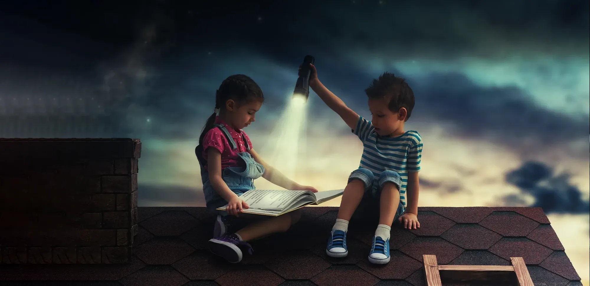
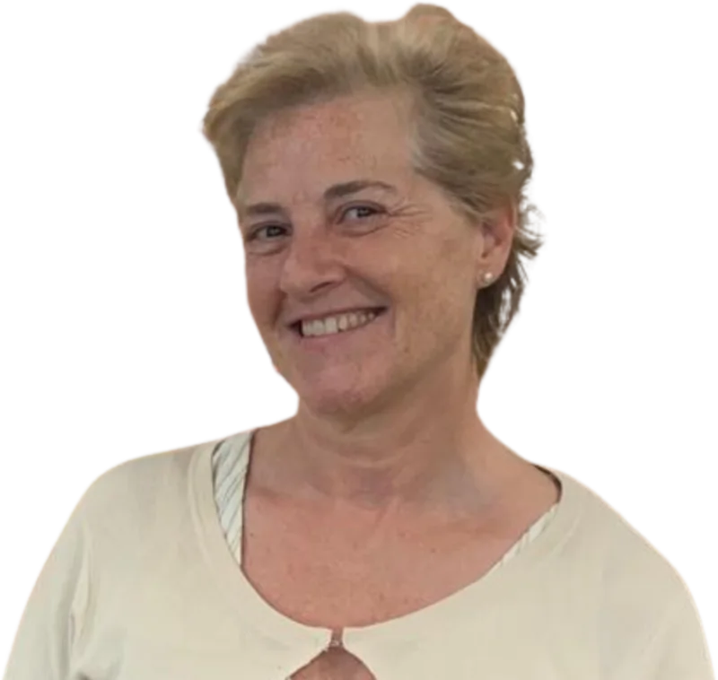
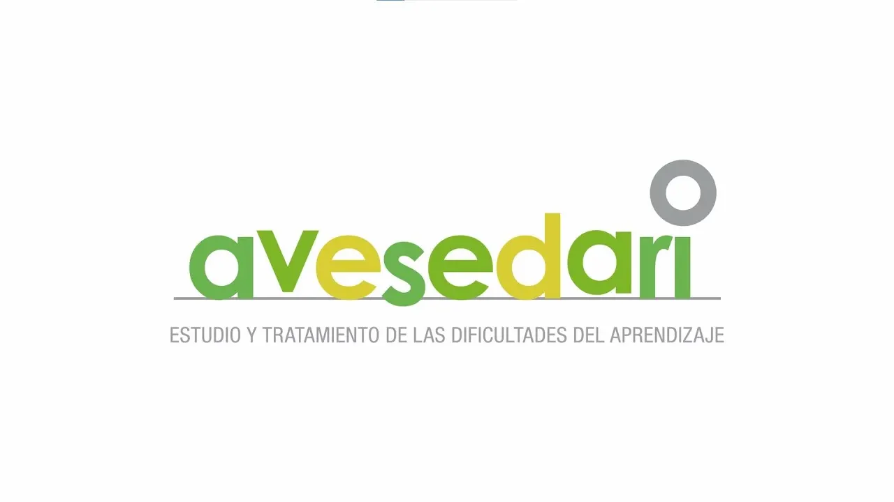
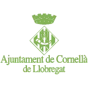
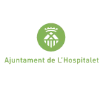
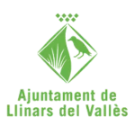
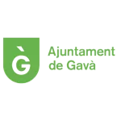
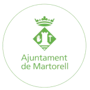

La lectura al alcance de todas las personas
Avesedari es una asociación sin ánimo de lucro que se dedica al estudio, evaluación y atención de las dificultades de aprendizaje de la lectura. Nuestros servicios van dirigidos a niños, niñas, familias, adultos, profesionales y entidades educativas.
- Investigación y divulgación
Investigación
Investigamos y aportamos soluciones para mejorar el aprendizaje de la lectura.
- Formación
Formación
Compartimos lo que sabemos con profesionales, estudiantes y con la sociedad en general.
- Responsabilidad social
Responsabilidad social
Llevamos las soluciones lectoras a quienes más lo necesitan.
Becas Avesedari para el entrenamiento lector Glifing
En Avesedari creemos firmemente que todas las personas tienen derecho a aprender a leer con autonomía y confianza, independientemente de su situación económica. Por eso, ofrecemos becas para acceder al entrenamiento lector Glifing a familias y entidades que lo necesiten, pero no puedan asumir el coste.
Pedir una beca

“Las dificultades de aprendizaje, como toda dificultad, son más graves cuanto más pobre es el entorno socioeconómico de los niños que las padecen.”
Avesedari nació en 2009 como el resultado de la iniciativa de un grupo de profesionales comprometidos con ofrecer soluciones innovadoras para el aprendizaje de la lectura. El proyecto comenzó con una investigación sobre el proceso lector y sus dificultades asociadas, desarrollada en colaboración con la Facultad de Psicología de la Universidad de Barcelona (UB) y la Universidad Politécnica de Cataluña.
Saber más en la revistaQuiénes somos- Personas atendidas
- 10.250+
- Practicums
- 75+
- Socios
- 170+
PENDIENTE Cifras por confirmar: la web dice 170+ socios y el monográfico, 822.
Testimonios
Cuando vi la deficiencia en la comprensión lectora de los chicos de la Fundación Nordelta cuando estuve trabajando en esta fundación hasta el 2023, me di cuenta de que se agrandaba la brecha de la desigualdad de oportunidades para nuestros chavales, y Valeria, de mi equipo, me habló del método Glifing. Me puse en contacto con Montserrat y le comenté que me encantaría construir un puente entre Barcelona y las Tunas, donde está nuestra Fundación. A los dos minutos me llegó la respuesta de Montserrat Garcia: el puente lo acabas de construir. Desde entonces, la fundación trabaja con el método Glifing gracias a la inestimable colaboración con la Asociación Avesedari y yo soy ahora una embajadora de esta asociación.
Embajadora de Avesedari
Gracias a la alianza con Avesedari, hemos podido llevar el método Glifing a colegios públicos de Chile, algo que ha impactado en más de 250 niños y niñas. Durante el año 2023, el 93% de los estudiantes mejoraron su percentil lector y el 23% lograron la lectura autónoma. ¡Vamos por más!
CEO Fundación Padre Semería y Acompañando Pasos
Mamá de Kiara: Nuestra experiencia con Glifing ha sido excelente. Glifing es un método de enseñanza de lectura. Kiara ha crecido de manera significativa y muy notable en poco tiempo utilizando este método. Kiara Maite explica que Glifing le ha permitido participar más en las clases de lecturas, trabajos en equipos y es muy divertido utilizarlo. ¡Estamos muy agradecidas!
Tutora de Kiara: Kiara me ha explicado supercontenta los resultados de la última valoración y la he felicitado por el gran esfuerzo que está haciendo. Desde el centro al que acude también nos ha explicado los adelantos y que ahora se atreve a leer en voz alta en clase de forma voluntaria, ya no le da vergüenza, y está muy contenta y participa más.
Gran glífer de Barcelona.
Cómo funciona el entrenamiento de lectura

Entidades colaboradoras





¿Te sumas?
¡Ayúdanos a ayudar!